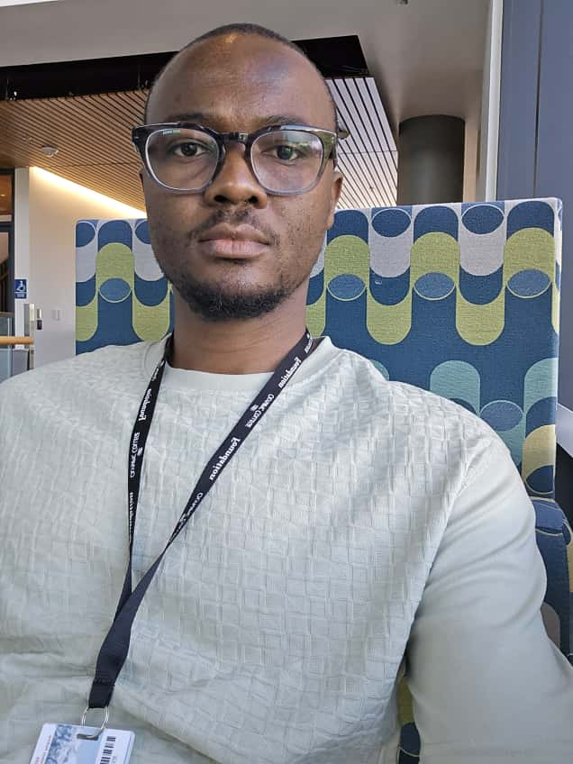
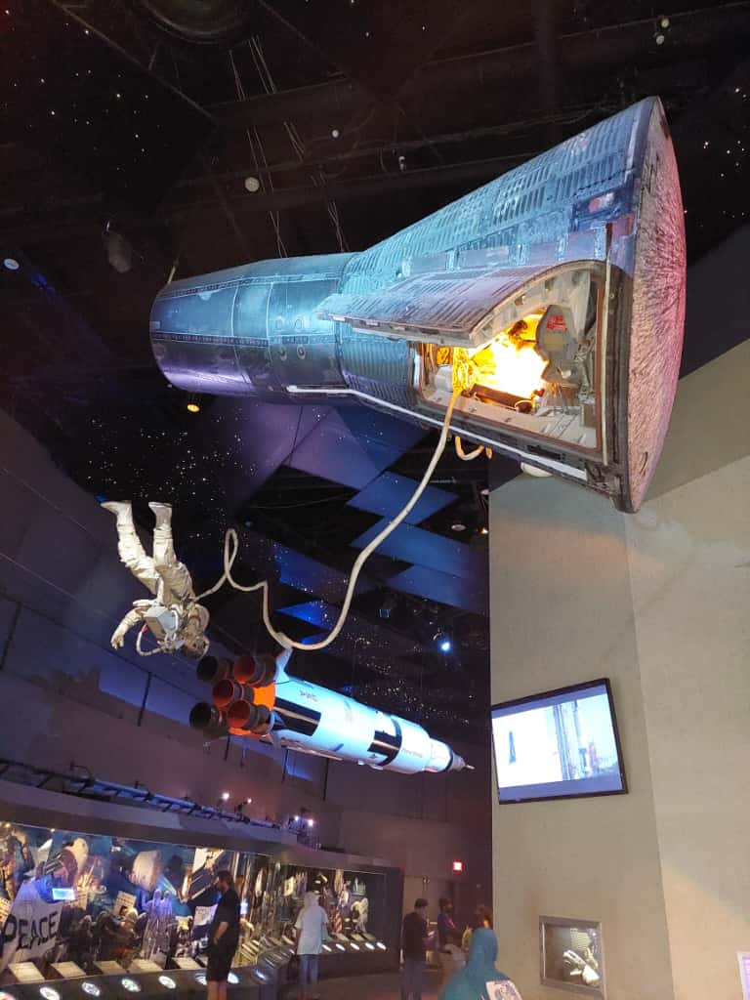
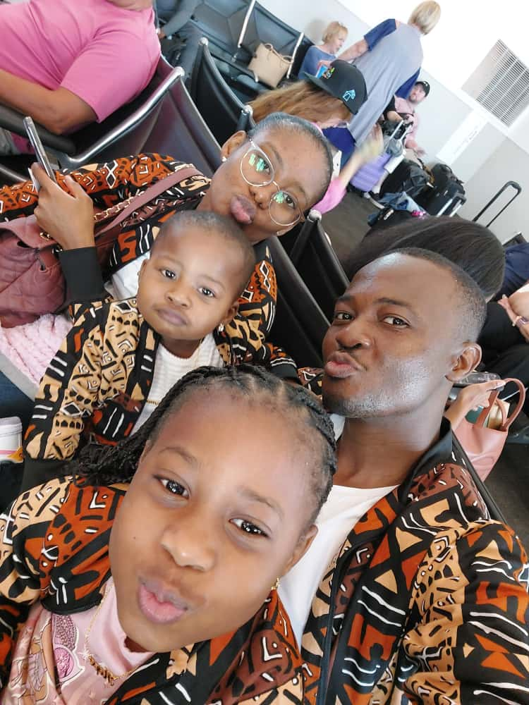
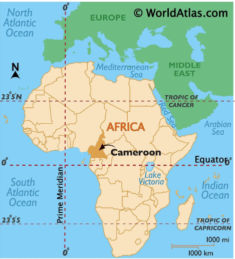

About Me

My name is Romaric Tchokouaha, I was born in Cameroon in 1990 where, where I grow up until my 31Yo
when I move in US.I was born into a modest family that instilled in me strong values and dignity.
I completed my elementary education in my hometown, attended high school in another city while living
with my grandparents,and pursued my university studies in yet another city, away from any family around.
I earned an Associate's degree in Civil Engineering in 2012 and worked successively as a draftsman,
construction supervisor, and later as a construction project manager, before immigrating to the U.S.
in 2021 in search of better opportunities.I am currently pursuing an Associate Degree in Information Technology at Olympic College,
with graduation expected in Spring 2026. Alongside my studies, I work as a student employee with the Facilities Department at Olympic College,
gaining valuable professional experience while developing my skills.
My goal is to continue my education and pursue a Bachelor's degree starting in Fall 2026.
About My Hobbies

I really don't have any hobbies. It may sound funny or trivial, but it's the truth.
As I mentioned earlier, I grew up in a fairly modest family. Take the word “modest” in the truest sense,
because I can assure you there were days when we didn't have enough to eat.
So how could we think about hobbies if we didn't even have enough food?
On the other hand, I would say that my interests are in science, art, and nature.
*This photo was taken at NASA in Houston, Texas, in 2021.
About My family

I have been married for 8 years, and I have two wonderful little girls with whom I love spending my
time.
And of course, by my side, I have a tender, kind, and beautiful wife with whom I have shared my life, my
daily life for 10 years now.
I love taking care of my family and being their protector. They are the reason why I fight every day.
*This photo was taken at Georges Bush intercontinental airport in Houston, Texas, in 2023. We were going in DC for vacation.
About Cameroon

Cameroon is a country located in Central Africa, above the equator.
It has an area of 475,000 square kilometers, an estimated population of around 30 million inhabitants
and a very rich cultural diversity,
with four geographical eras and a little over 250 tribes. It is one of the two countries in the world
whose official languages are French and English.
You can get more information about Cameroon here.
*I took this image on google